Just getting started a YouTube channel and want to build a decent following? Create a channel trailer. Present yourself, edit together a content preview, and get ready to enthuse your target audience.
No channel is too large or too small to have a YouTube channel trailer.
I think at this point; we can safely say that people like this platform a lot. And where there are people, there are also brands looking to promote their offerings.A winning trailer is the key to be outstanding and win more new viewers, because it helps audiences recognize if they are interested in your video content.
It’s a sneak peek into the realm or your business. Moreover, it divulges why your channel exists, your personality, represent the drive behind your enthusiasm and convince the visitors it will be worth their time to check out some of your videos.
If you want to start a successful YouTube channel, you need to know that there are 38 million other competitive channels out there.
But you can beat the fierce competition, with the influential power feature!
Contents
- 1. What Is a Channel Trailer?
- 2. Why Is a Channel Trailer Important?
- 3. How to add a channel trailer on YouTube 2021
- 4. YouTube Channel Trailer Content Mapping
- 5. Keep the video short
- 6. Step into your target audience' shoes
- 7. Create a mobile friendly YouTube trailer
- 8. Add attention grasping content
- 9. Update Your Trailer Frequently
- 10. Biteable
- 11. InVideo
- 12. Wondershare Filmora
What Is a Channel Trailer?
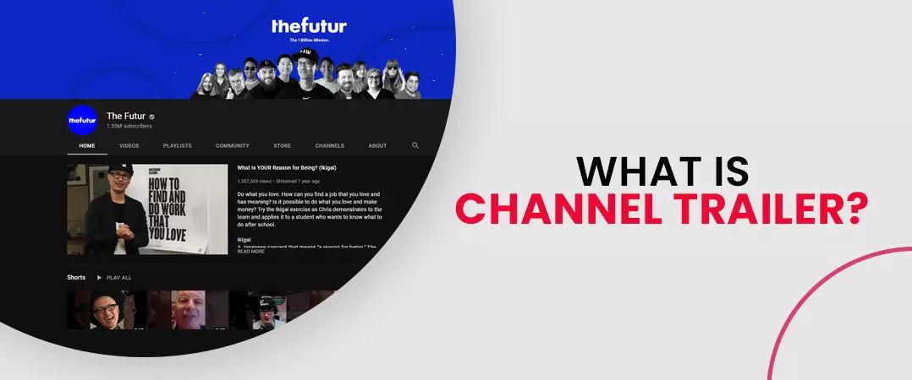
A Channel Trailer is a video premeditated to help invitees speedily learn about a channel. When empowered, this trailer is automatically exhibited at the top of a YT Channel Page for non-subscribed visitors. YouTube channel trailer make it laid-back for those who click through to your channel to find more about your content and why they should subscribe to your channel.
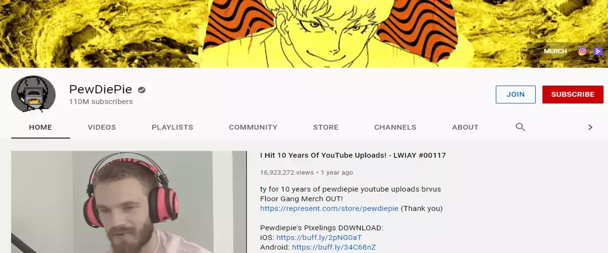
It is often the most observed video on a channel, so it’s an exclusive opportunity to get more viewers and leave a sturdy first impression. You can also buy real subscribers for that.
A smaller channel with a prodigious channel trailer will look more eye-catching than a larger channel with a pitiable trailer and an indistinct message.
Why Is a Channel Trailer Important?
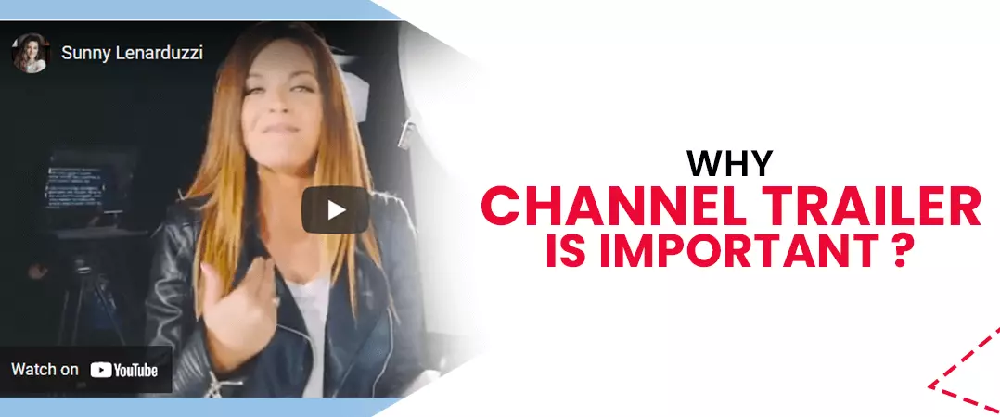
Increase subscribers
Your Channel Trailer can be an authoritative way to turn channel page visitors into subscribers.
After somebody perceives your Channel Art and Channel Icon, your Channel Trailer is classically the next thing that hooks their eye. If implemented appropriately, trailer visitors will engage more with your channel and subscribe. If you want individuals to subscribe to your channel, all you have to do is ask. But it’s superlative to ask with a stunning channel trailer.
Swiftly catch new visitors’ consideration
Over 77% of 15–35-year-old American internet consumers watch videos on YT. Your unvarying videos might differ in length and subtleties.
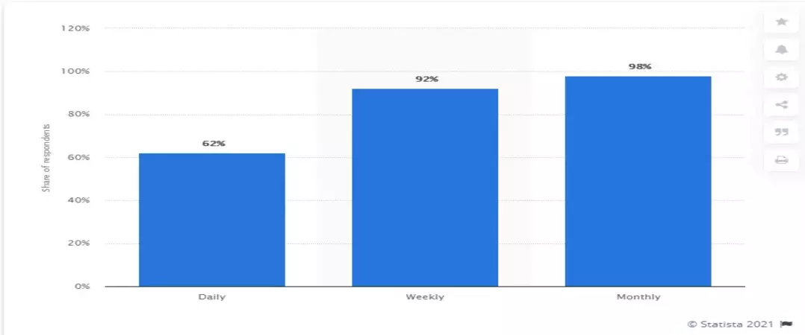
If a 30-minute video is the initial video your potential subscriber grasps, they might end up getting troubled of watching that long to decide if you’re the accurate channel for them.
Let them know what to expect
Is your content funny? Relaxing? Educational? Or entertaining?
With your channel trailer, you can represent the tone and nature of your videos with short prospects and list the categories and topics you cover. Growing expectations this way is one of the preeminent ways to tempt them to subscribe.
You can also state your broadcasting frequency if you have a schedule. Half of 18- to 34-year-olds would drop what they’re doing to watch a new video by their favourite creator, so you must let them know what days and times you upload!
How to add a channel trailer on YouTube 2021
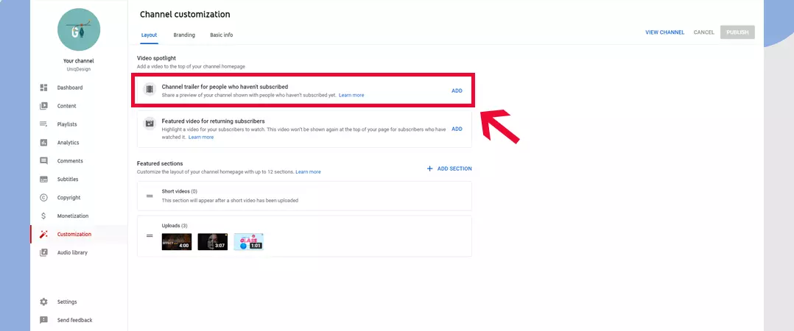
Your channel trailer bids an opening of your channel so viewers can learn more and subscribe. By default, ads won't appear on your channel trailer, unless your video encompasses third-party claimed content. If the onlooker is already subscribed to your channel, they'll get your featured video.
- Sign in to YouTube Studio
- From the left menu, click on; Customization Layout.
- Below Video spotlight, click ADD and pick a video for your channel trailer.
- Hit ‘Publish’.
YouTube Channel Trailer Content Mapping
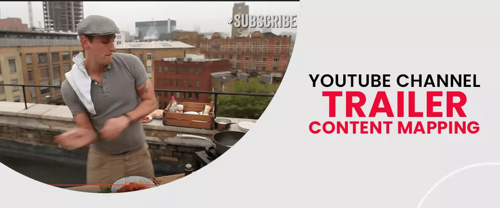
There are five fundamentals that a noble YouTube channel trailer 2021 video must contain:
1. Introduction
Present yourself. Your name, your job so that people can recognize you among thousands of other creators.
2. Credibility
YouTube is a podium assorted with upright and incorrect information. Just express, why your information is trustworthy. For instance, you want to be a blogger posting making up videos, you can remark that you graduated from a well-known makeup school.
3. Value proposition
70% of millennial YouTube users watched a video to learn how to do somewhat new or learn about something they’re interested in. Your YouTube channel Trailer in 2021 must reflect the benefits of watching your content a user can get. This inspires people to subscribe.
4. Posting Schedule
You can represent when you upload your new videos. That’s very essential because people want to know when they will be able to watch your new-fangled videos.
5. Call to action
The chief objective that you post a channel trailer is gaining more subscribers.
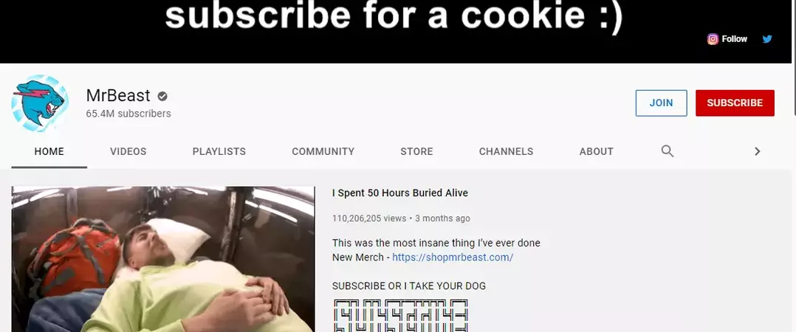
Retell them at the end of your trailer video.
Here is the YT channel trailer video content example:
Hi, I’m Alex, welcome to my YouTube Channel!
I am a chef and, on my channel, I will be posting videos about ‘different cuisines’ on every single day.
You will learn how to cook mouth-watering dishes from my channel videos.
Be sure to subscribe for new content, like, share and comment below.
Best practices
Keep the video short
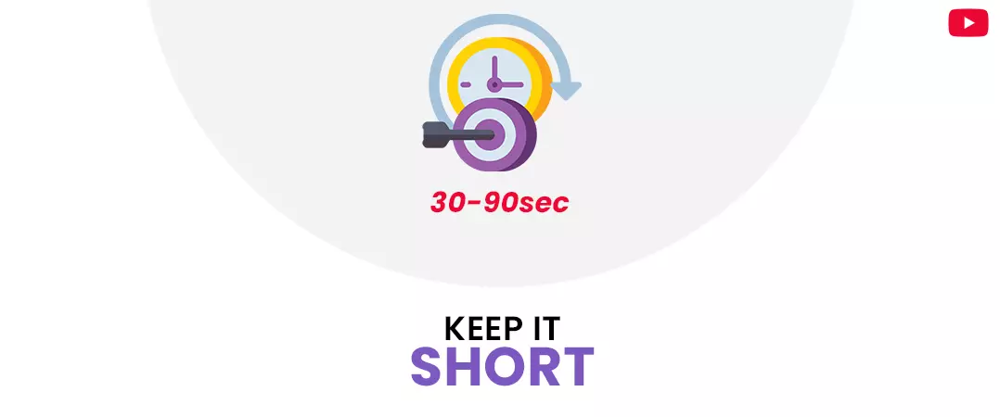
People are more expected to watch channel trailer if it’s of a reasonable length. The best YouTube channel trailer length can be between one minute and thirty seconds to three minutes. This time casing is long enough to give the material information concerning you and your channel athwart to the viewer, nonetheless not so long that you will drop the watchers’ attention in the intermediate of the video.
While there’s no perfect length for a trailer, YouTube recommends that you “keep it short”. Your trailer won’t be interjected by ads, which will keep the user engrossed on why they should watch more videos from your brand.
And many YT marketing professionals recommend that you limit the length of your trailer to 30-60 seconds.
Your video should be just long enough to convey the key messages that align with its goal. If you do create a longer video, experiment with how your present content — the pacing, story arc, and graphics — to keep audiences interested throughout.
Step into your target audience' shoes

In a 2020 recent survey, 94% of people said they watch explainer videos to learn about products. While many users might not go to the YT podium just for product videos all the time, they possibly still watch them when they're relevant to their buyer's voyage.
To know, how to create a trailer for your YouTube channel, you should assume that the viewer knows unequivocally nothing about you or your brand and ask yourself the following interrogations:
- What does the onlooker instantaneously want to know about my channel?
- What information is most significant to inform in the first few seconds?
- How do I want the onlooker to feel after viewing my channel trailer?
- Why should they be obligated to return to my channel?
- What tone should I use; lively, funny, serious, educational?
- What branding- colour schemes and fonts are associated with my brand?
Viewers should be convinced that they’ve found the perfect channel for them in the first 10 seconds – just from the info you provide them within your channel trailer.
Use captions and clips
To make your trailer more pleasing, merge short scenes, sounds, and text. Include a short title within the first screen or point out fundamental topics you're covering in the video.
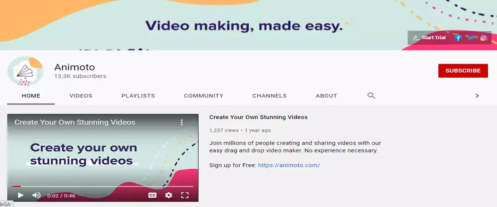
Correspondingly, you may want to add captions for those viewing the trailer with the sound off. Maybe they're listening to music at the identical time, or were put off when it started playing automatically.
Here's an illustration of a captioned channel trailer…
Include music and first-rate visuals
Nothing lures in your viewers more than animated graphics united with the accurate music. eMarketer predicts that the number of YT users in India will reach 342 million in 2021.
Prodigious visuals will keep your target audience enthralled, and the music will set the tone and dynamism for your YouTube channel trailer in 2021.
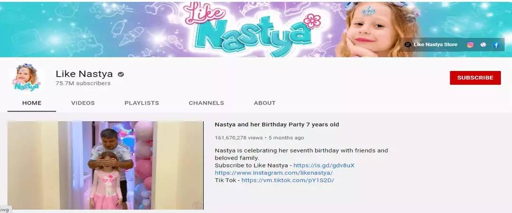
Select music and graphics that are unswerving with your confrontations, channel, and brand. A cohesive brand image leads to augmented brand awareness, making your company and its product impressive and decipherable to potential consumers.
Take viewers on an expedition
As humans, we tend to incline towards other people, and showcasing your distinctive persona in front of the camera empowers you to deeper sturdier connections with new audiences.
That’s where storytelling comes into picture. The most successful YouTube channel trailers 2021 are those that take onlookers on a journey.
- Stories can be fascinating!
- It upsurges the emotional quotient;
- It makes it easier for you to convey your message;
- It keeps your viewers engaged Buy YouTube likes & Buy YouTube Comments and excited for more;
- And, it also makes your content more impressive.
Show a Highlight Reel
As YouTube states “Show, don’t tell”.
This is prodigious advice. Apparently, you should let people know who your channel helps and why you created it. But don’t forget to also tell viewers what to expect from your video content.
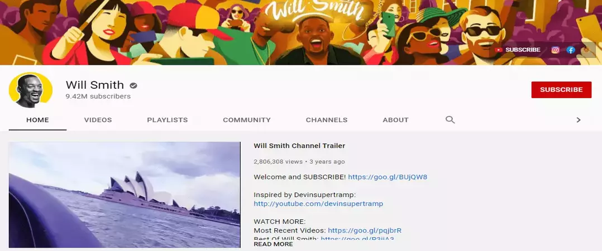
If you’ve previously published a few videos on your channel, you’re in pronounced shape. Just include a highlight reel of your finest clips in your Channel Trailer.
Optimize Video Title and Description
Your trailer’s Title and description appear succeeding to your trailer on your Channel Page.
Hence, it’s essential that your video title and description support the memorandum in your YouTube channel trailer.
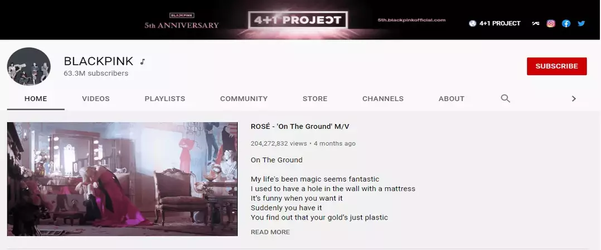
For your trailer’s video description , concisely highlight:
- Your tagline
- What types of videos you upload?
- Broadcasting schedule
- Call-to-action (via YouTube Engagement)
Go with Your best creation
Some YouTubers ditch the customary trailer. As an alternative, they use one of their best videos as a Channel Trailer. Unambiguously, they use a video that translates a large number of viewers into subscribers.
Use a Script
Even if you don’t typically plan out your videos, consider using a script or framework for your trailer.
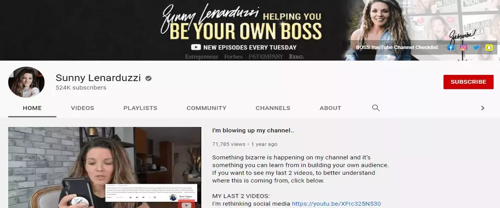
A script aids you hit your important points in the undeviating amount of time conceivable.
Signify:
You want your trailer to epitomize the videos you create. Even though the arrangement may be different than what you’re used to, do your best to preserve the branding, feel and personality of your videos in your trailer.
Include an End Screen:
YT will automatically add a subscribe button on-screen when your trailer finishes
Don’t reveal all the points
The channel trailer should not be too loquacious or deep. Keep the variability of subjects, light and not too in depth.
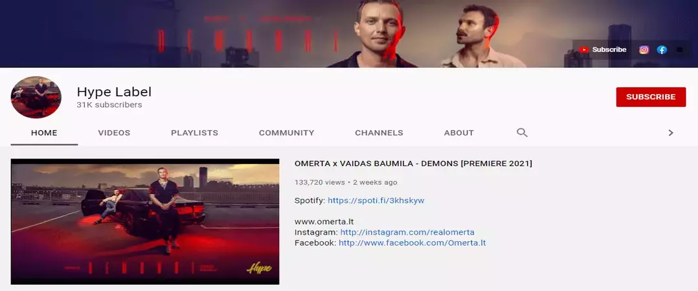
If the viewer is interested, they will view the other videos on your channel.
Make viewers excited for more videos.
Create a mobile friendly YouTube trailer
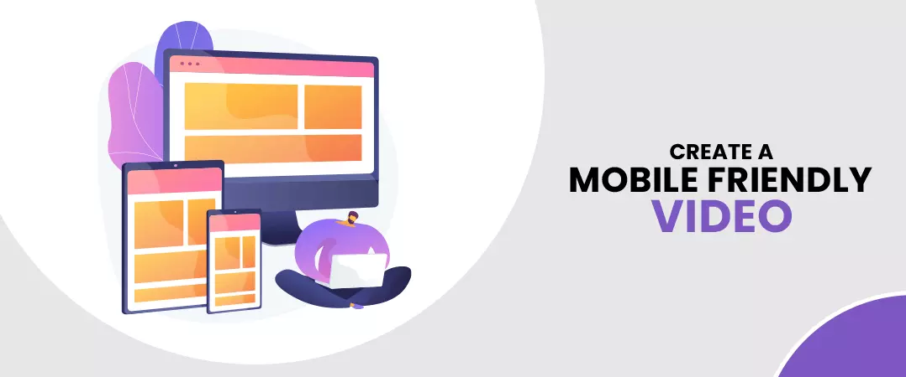
YouTube is the top video streaming app, and the average user spends 23.2 hours per month watching content.
Over 70% of views are from mobile devices. YT presented end screen and cards feature. They all work prodigious on mobile phones. Try it!
Leverage Funny Annotations
YT is boundless for having irreplaceable and helpful graphics on the screen while your video is playing. Partaking some fun elements and useful annotations, such as the days you make videos or a subscribe icon, during the intro video can be very accommodating to new viewers. They also help to lift viewer engagement with your videos!
Add attention grasping content
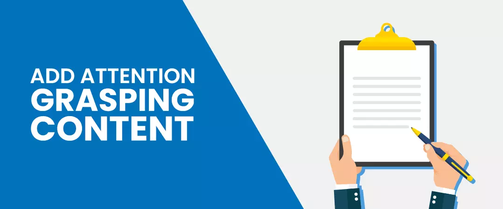
It is vital that the content of the YouTube channel trailer be attention grabbing and fascinating to the viewer. Music, pictures and tagline phrases are all great ways to clutch the viewer’s attention. Channel trailers should be inimitable and display the personality of the channel. The video below really grabs the attention of the viewer.
Update Your Trailer Frequently
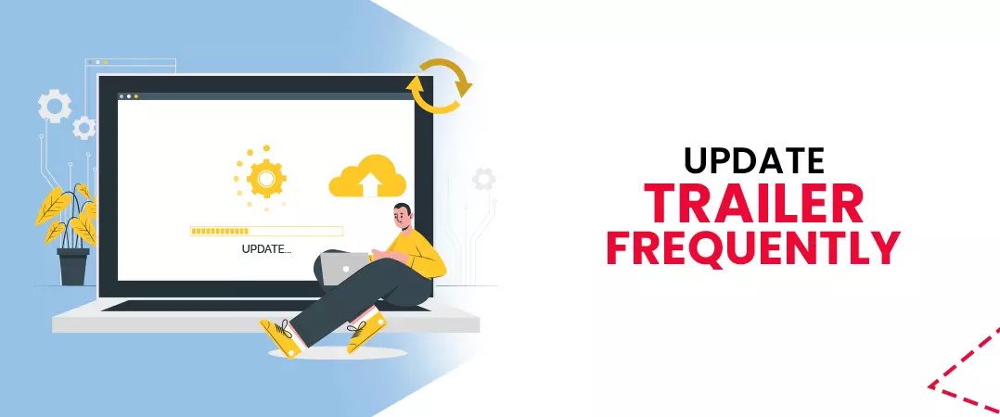
As a content creator, you may find that your brand vicissitudes every year. Perhaps you change up your look, type of content, regularity of uploads or other fragments of the channel. Safeguard you are updating your trailer each time you make noteworthy changes to your channel!
Tools for Producing Awesome YouTube Channel Trailers
Creating an inviting channel trailer takes exertion, but don't lose the big opportunity! There are many tools out there, so to make things a little calmer for you, here are some of my favourites.
Biteable
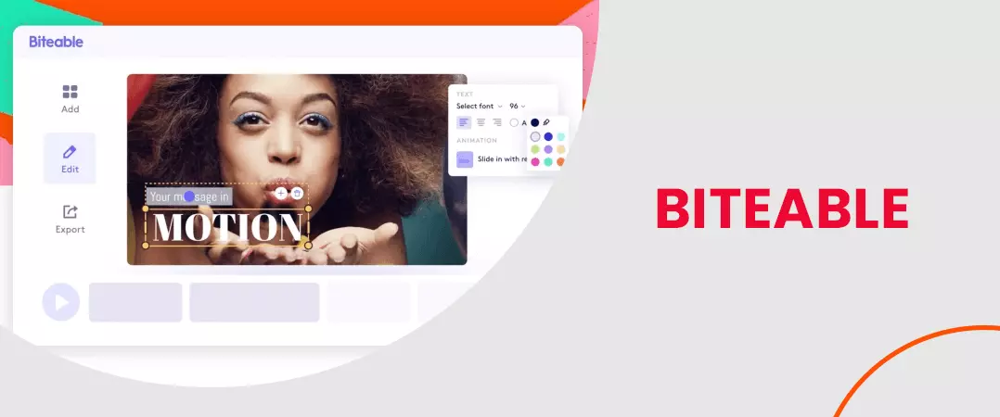
Biteable is an inexpensive tool for crafting stunning trailers. It comes with hundreds of copiously customizable templates to select from, and you can add your own subjective touch using your images, music, text, and footage.
InVideo
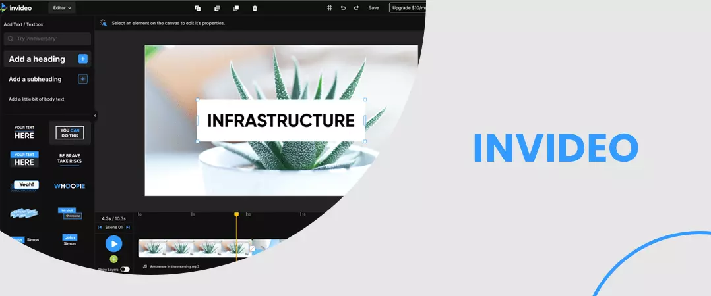
InVideo is a comprehensible online tool that helps you edit and create videos with comfort. It offers you plentiful templates and the choice to add music from the stock audio list, images, GIFs, and much more.
With the help of this tool, you can discover your ideas and create professional-level videos even if you’re just a learner.
From including captions & subtitles to your videos to tallying voiceovers, you can use InVideo to harvest any type of channel trailer.
Wondershare Filmora
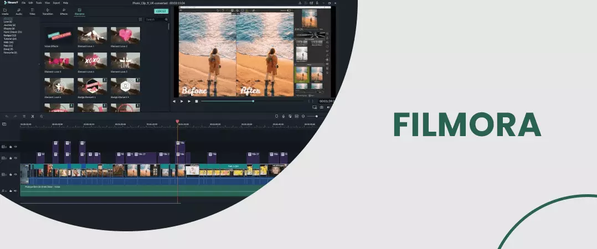
Wondershare Filmora is a commanding and free video editing tool that you can use on both PCs and Macs. This sequencer is unpretentious and easy to use, which makes it ideal for beginners without a lot of editing experience.
I hope you found this a useful guide to know, how to create a YouTube channel trailer!
Feel free to share!